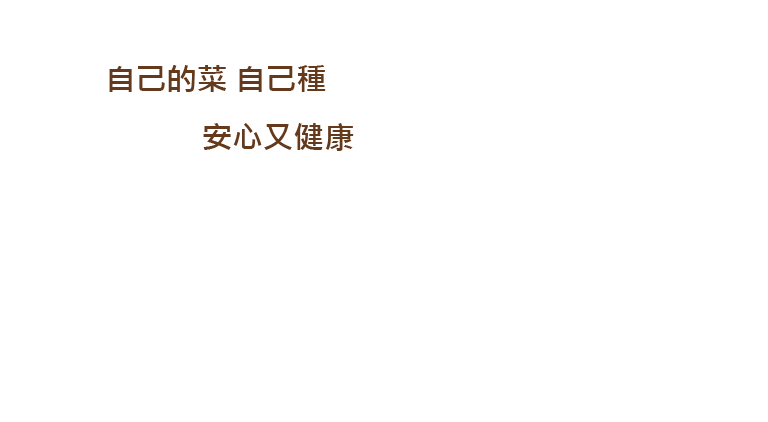

選擇蔬果
選擇魚缸造型
小魚菜缸完成

自己的菜自己種，可依喜好組合屬於自己小魚菜缸，靠著魚幫菜，菜幫魚的大自然共生原理就可以在自家採收到新鮮無毒的蔬菜! 將養魚結合種菜，環保又紓壓！


植物吸收養分可實現水質過濾，許多植物都適用於水生系統。魚類排泄物會影響營養物質的濃度及通過微生物向植物根部提供營養物質的多寡。

魚透過排泄物為植物提供營養。淡水魚是使用魚菜共生最常見的水生生物，例如：寶石魚、大頭魚、錦鯉等等，但也有使用淡水小龍蝦和蝦。

微生物對魚排泄物進行分解，為植物提供養分。即硝化菌，在有氧的環境下將氨轉化成硝酸鹽，是在魚菜共生系統中最重要的功能之一